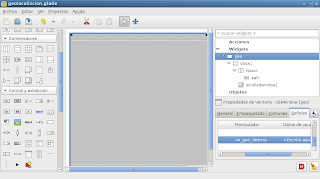

Aplicación que muestra las coordenadas del Celular en google maps en el escritorio
Posted on Thu 06 January 2011 in Tutorial Python • 2 min read
En este artículo se usará de base 2 artículos anteriores, el primero sobre un navegador web básico con python+gtk+webkit y el segundo el de captura de la localizción del celular con Android.
La idea es capturar la información del GPS del celular y mostrarlo en una aplicación gtk gracias a webkit mostrando la ubicación geográfica gracias a google maps.
La interfaz en glade se muestra a continuación.

En realidad es la misma aplicación del navegador lo único es que se le quito la entrada de texto y el botón de "ir".
A continuación se muestra el código de la aplicación:
#!/usr/bin/env python2.6
# -*- coding: utf-8 -*-
"""
Nombre:Geolocalizacion
Descripción: Programa que captura la localización del GPS del Celular y lo
muestra en google maps en el escritorio Linux.
Versión:0.1
Licencia:GPLv3
Autor: Ernesto Crespo
correo: ecrespo@gmail.com
"""
#Import gtk and webkit
import gtk
import webkit
#Importando el módulo android
import android
from time import sleep
#class App
class App:
def __init__(self):
#Constructor
#Se asocia el archivo glade al Builder
self.glade_file = "geolocalizcion.glade"
self.glade = gtk.Builder()
self.glade.add_from_file(self.glade_file)
#Se asocia la ventana geo
self.window = self.glade.get_object('geo')
#Se asocia el botón salir
self.exit = self.glade.get_object('salir')
#Se asocia la ventana deslizante
self.scrolledwindow1 = self.glade.get_object('scrolledwindow1')
#
#Se conecta el evento destruir
self.window.connect("destroy",self.on_geo_destroy)
#Se asocia el evento del botón salir
self.exit.connect('clicked', self.on_salir_clicked)
#Se abre la página de google maps
#Se instancia la clase webview
self.webview = webkit.WebView()
#Se agrega a la ventana deslizante
self.scrolledwindow1.add(self.webview)
#Se captura la localización
tupla = localizacion()
#Se abre el url de google maps pasandole la longitud y latitud
self.__go("http://maps.google.com/maps?q=%s,%s" %tupla)
#Se muestra la ventana principal de la aplicación
self.window.show_all()
def __go(self,url):
#Se abre el url
self.webview.open(url)
def on_geo_destroy(self,*args):
#Se cierra la apliación
gtk.main_quit()
def on_salir_clicked(self,*args):
#Se cierra la aplicación
gtk.main_quit()
def main(self):
#Se inicia la aplicación
gtk.main()
def localizacion():
#Se crea la instancia de la clase Android
droid = android.Android()
#Se inicia la localizacion
droid.startLocating()
#Se espera 15 segundos
sleep(15)
#Se presenta en la consola la información de la localización
#Se maneja la información de un diccionario.
latitud = droid.readLocation().result["network"]["latitude"]
longitud = droid.readLocation().result["network"]["longitude"]
#Se detiene la localización
droid.stopLocating()
#Se retorna la latitud y longitud capturada por medio del GPS del celular.
return (latitud,longitud)
if __name__ == '__main__':
app = App()
app.main()
La figura de la aplicación funcionando mostrando el mapa y la posición que devuelve el GPS del celular.

===
¡Haz tu donativo! Si te gustó el artículo puedes realizar un donativo con Bitcoin (BTC) usando la billetera digital de tu preferencia a la siguiente dirección: 17MtNybhdkA9GV3UNS6BTwPcuhjXoPrSzV
O Escaneando el código QR desde billetera: